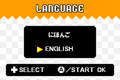
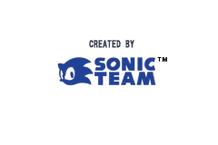
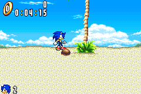

Sonic Advance (USA) (En,Ja) (Beta) (2001-10-31)
Flash 512K Save Format Mapped (Family Spec) 💾 MultiBoot 🎮 4P Link
Cartridge Identity
- Game Code
ASOE(FamilyASO)- Header Title
SONICADVANCE- Maker / Revision
8P/ rev0- ROM Size
- 8.0 MiB (8,388,608 B)
- Save Media
Flash 512K- SHA-256
bca1e8e75f24a6a48ddd47c2765e426c21d82341ff09ac5698d3daac5b995e77- Engine / SDK Group
comm-016(22 families)
Screenshots


Link Cable & Multiplayer Communications
This title contains detected communication capabilities: 💾 MultiBoot 🎮 4P Link.
Detailed protocol specifications, SIO registers, Joybus commands, and MultiBoot sequences are documented in the Link & Multiplayer Reference.
- Multi-Player SIO (4P)
- 16-bit ring network · SIOCNT (
0x04000128) literals:0x006d74,0x007100,0x007180· SIODATA32/SIOMULTI0 (0x04000120) literals:0x00727c,0x0072e0,0x007350 - Single-Cart MultiBoot
- Single-Cartridge MultiBoot (Download Play) client/server handler · Thumb SWI 0x25 (
0xDF25):0x0997f6,0x41c62e,0x4a6a48,0x57fe8a
Battery Save Format Specification (Family Shared)
This release shares its save architecture with canonical family reference Sonic Advance (Japan) (En,Ja) (Family
ASO).
Open Family Save Format Spec (ASOJ)Download save-format.json
- Canonical Specification
ASOJ· 14 mapped fields · 1 verified checksum(s) · Confidence: MEDIUM- gbakit Built-In Support
- Built-in (ASOJ)
gbakit save verify ASOJ save.sav
gbakit save decode ASOJ save.sav
gbakit save fix ASOJ damaged.sav -o repaired.savLate-Game / Unlocked Battery Save
Synthesized clean-room with zero ROM patching and verified live in headless
libmgba.so.0.10 —
see the Late-Game Saves & Boundary Fuzzing Showcase.
- Deep In-Game Warp
- Download
asoe_deep.sav(64 KiB) · persisted_cleanFlash 512K (64 KiB)·sum32_le (0x042C over [0x0000..0x042C))
All 7 Chaos Emeralds + Extra Zone unlocked -> LIVE Super Sonic gameplay on The Moon Zone (Earth visible in starry sky, 43 rings) - Hidden / Post-Game Unlock
- Download
asoe_unlocked.sav(64 KiB) · persisted_cleansum32_le
Full Stage Select Menu (Zone 1 Act 1 through X-Zone & The Moon Zone) · All 7 Chaos Emeralds (Super Sonic / Extra Zone unlocked) · All 4 Characters Cleared


Observed Battery Save Layout
- Fill Byte & Active Size
0xFFfill · 0–4,086 / 65,536 B active (entropy 0.76 bits/B)- Active Offset Ranges
0x0–0x38B,0x38D–0x39B,0x39D–0x3AB,0x3AD–0x3BB,0x3BD–0x3CB,0x3CD–0x3DB,0x3DD–0x3EB,0x3ED–0x3FB, +3 more (11 total)- ASCII Magic / Headers
PIRO- Observed Variable Regions
- 4,086 bytes across 11 spans:
0x0–0x38B,0x38D–0x39B,0x39D–0x3AB,0x3AD–0x3BB,0x3BD–0x3CB,0x3CD–0x3DB,0x3DD–0x3EB,0x3ED–0x3FB, +3 more - Candidate Checksum/Counter Spans
- None
Asset Map (formatkit.asset-map.v1)
Download ASOE-r0-afc29e3325baf68a.asset-map.json.gz (65,867 B (64.3 KiB)) Verified PASS · 5.67% coverage
| Metric | Bytes / Value | Entries |
|---|---|---|
| Identified | 446,817 B (436.3 KiB) (5.33%) | 634 |
| Mapped | 0 B (0.00%) | 0 |
| Opaque | 28,825 B (28.1 KiB) (0.34%) | 1 |
| Unknown | 7,912,966 B (7.55 MiB) (94.33%) | 607 |
| Total ROM Size | 8,388,608 B (8.00 MiB) | 1,242 |
| Coverage % | 5.67% | — |
| Entries w/ Code Refs | 708 / 1,242 (57.00%) | — |
Top Identified Formats: compress.bios-lz77 (9 · 286,320 B (279.6 KiB)) · gfx.gba-palette (551 · 106,912 B (104.4 KiB)) · compress.bios-rle (72 · 50,929 B (49.7 KiB)) · audio.m4a-song-table (1 · 2,464 B (2.4 KiB)) · gba.rom-header (1 · 192 B)
Largest unknown Extents (Headerless / Custom Asset Candidates)
| Offset | Size | Shannon Entropy | Code Refs |
|---|---|---|---|
0x00322020 | 910,064 B (888.7 KiB) | 4.756 bits/B | 0 |
0x00180EE4 | 718,284 B (701.4 KiB) | 2.670 bits/B | 0 |
0x00283F98 | 647,272 B (632.1 KiB) | 2.864 bits/B | 0 |
0x00766694 | 276,276 B (269.8 KiB) | 7.409 bits/B | 0 |
0x00242444 | 269,108 B (262.8 KiB) | 2.275 bits/B | 0 |
gzip -dk ASOE-r0-afc29e3325baf68a.asset-map.json.gz && gbakit map verify rom.gba ASOE-r0-afc29e3325baf68a.asset-map.json
gbakit assets export rom.gba --asset-map ASOE-r0-afc29e3325baf68a.asset-map.json -o out/Text, Fonts & Scene Data
- Primary Text Encoding
- 16-bit / UTF-16LE text (
30ASCII strings ·8Shift-JIS runs) - Font & VWF Indicators
- VWF Width Table 1bpp Font · BIOS SWIs: BitUnPack
0x10:7· LZ770x11/12:3· Huffman0x13:0· RLE0x14/15:5 - Scene & Packaging
9ROM pointer tables (≥32 entries,4≥200) ·2relativeu32TOCs ·502OAM metasprite hits
Verified Deep-Dive Offsets & Notes (Dimps / Sega · Platformer) —
see the GBA Text & Fonts Guide for VWF, charmap, and
gbakit text workflows.
- Verified Text Encoding
- Tile-graphic UI + minimal ASCII zone labels (0x682944)
- Level Pointer Table
0x0B7F4C(72 entries)- Sample ASCII HUD Offset
0x682944
Hardware MMIO Subsystems
ppu_display0x8000980save_bus_sram_flash0x8098c54,0x8098fb4,0x80990d4,0x8099248
Regional Variants & Revisions (Family ASO)
- Sonic Advance (Europe) (En,Ja,Fr,De,Es) (
ASOP, 8 MiB) - Sonic Advance (Japan) (En,Ja) (
ASOJ, 8 MiB) - Sonic Advance (Japan) (En,Ja) (Rev 1) (
ASOJ, 8 MiB) - Sonic Advance (Japan) (En,Ja) (Rev 1) (Virtual Console) (
ASOJ, 8 MiB) - Sonic Advance (USA) (En,Ja) (
ASOE, 8 MiB)